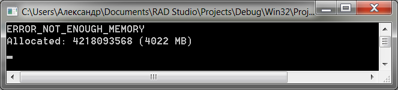

Миф №7: 32-х разрядная программа не может выделить более 3 Гб в своём адресном пространстве
Как мы увидели выше (в мифе №5), включение режима /3GB позволяет вам выделить память больше 2 Гб, но в том эксперименте вы могли столкнуться об ограничение в 3 Гб. Утверждается, что 32-х разрядная программа, скомпилированная с IMAGE_FILE_LARGE_ADDRESS_AWARE, не может выделить более 3 Гб памяти.
Кажется, что легенда подтверждена в мифе №5? Но не так быстро!
Создадим такую программу:
|
1 2 3 4 5 6 7 8 9 10 11 12 13 14 15 16 17 18 19 20 21 22 23 24 25 26 27 28 29 30 31 32 33 34 35 36 37 |
program Project1;
{$APPTYPE CONSOLE}
uses Windows;
{$SetPEFlags IMAGE_FILE_LARGE_ADDRESS_AWARE}
const ReserveSize = 1024; // 1024 * 64 Kb - резерв для работы по выводу результатов IncSize: Cardinal = 64 * 1024; // выделения по 64 Kb var Sz: Cardinal; LasrErr: Cardinal; Reserve: Pointer; begin // Сохранили резерв Reserve := VirtualAlloc(nil, ReserveSize * IncSize, MEM_RESERVE, PAGE_READWRITE);
// Цикл по определению максимума Sz := ReserveSize * IncSize; while Assigned(VirtualAlloc(nil, IncSize, MEM_RESERVE, PAGE_READWRITE)) do Inc(Sz, IncSize); LasrErr := GetLastError;
// Отпустили резерв, чтобы у нас была память для обработки и вывода результатов VirtualFree(Reserve, 0, MEM_RELEASE);
// Смотрим, что получилось if LasrErr = ERROR_NOT_ENOUGH_MEMORY then WriteLn('ERROR_NOT_ENOUGH_MEMORY') else WriteLn(LasrErr); WriteLn('Allocated: ', Sz, ' (', Sz div (1024 * 1024), ' MB)'); ReadLn; end. |
Эта программа пытается исчерпать память кусками по 64 Кб. Кроме того, она держит резерв памяти, чтобы выполнить WriteLn и работу со строками в конце (в самом деле, если вы исчерпаете всю память, то не сможете вывести результат). Программа также помечена флагом IMAGE_FILE_LARGE_ADDRESS_AWARE, что даёт ей доступ к памяти больше 2 Гб.
Теперь запустим эту 32-х разрядную программу на 64-х разрядной системе (никаких дополнительных действий вроде включения спец. режимов не требуется):

Это ж без малого аж 4 Гб для 32-х разрядной программы! Т.е. почти двукратное увеличение по сравнению с обычными 2 Гб. Круто.
Статус мифа: plausible.